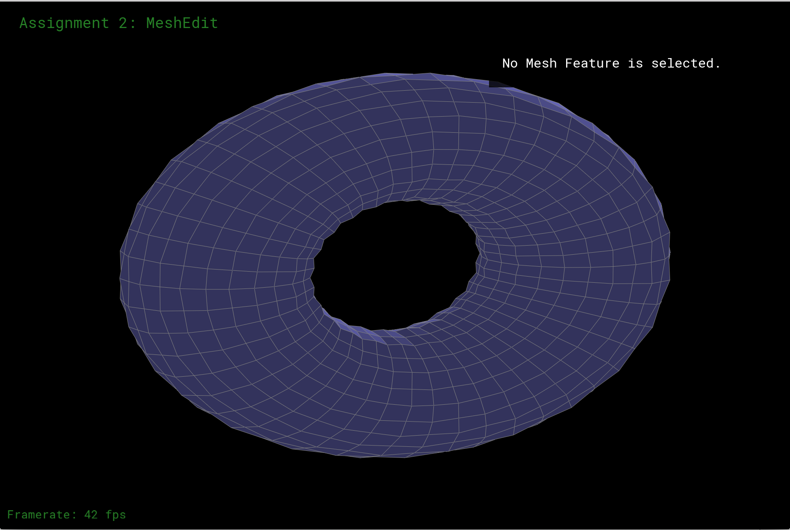

Project Title: Displacement Maps using Dynamic Tessellation
Team Members: Jeff Yu (cs184-ady), Bing Bo (cs184-afd)
Having been working on our final project for two weeks, we did suffer quite a lot from it but everything seems working on schedule. To be honest, we were really behind at one point, but we tried our best to catch up. So far, we have already implemented Catmull-Clark Subdivision and Adaptive Subdivision ( I would call ours 'Weak' Adaptive Subdivision; reason in details would come below). Getting started was the hardest period, since most the project files were given to us at first and, therefore, recapping those old memories took us awhile. But we have reached the halfway mark of it, and there is no sense in turning back now :)
Firstly, we implemented Catmull-Clark Subdivision so that we are able to apply subdivision on all the polygon meshes. The Vertex Update Rules can be found in the class slides. We firstly iterate through all the faces and edges to find the corresponding face points and edges points. Then we are to divide each polygons into four, which is much harder than it sounds. The issue occurring to us was that, if one face is considered to be applied subdivision on, we are unable to detect whether its neighboring faces have already been partitioned in which case the edges of the face we are working on would have been divided into two respectively already. Therefore, we decided to divide all the edges into half in advance in the subdividing phase. Then add all the new faces, edges, half-edges, and vertices if needed, and carefully assign their new attributes.
Here are some screenshots on quad-based torus.dae:
|  |
Moreover, it's also working on the triangular-based meshes:
As written in the proposal, Adaptive Subdivision is used to avoid over-tessellated and under-tessellated cases. To be more specific, we need to find such a metric that determines if our meshes need more subdivision. Usually, each meshes is treated respectively; if a mesh has been smooth enough, then we don't apply subdivision on it anymore, but that does not mean other meshes have been smooth enough too. In our implementation, we chose to achieve the same spirit in a different but similar way: if there exists one mesh that is not smooth enough, we apply subdivisions on all the meshes. Implementing in this way reduces a lot of workload compared with the classical Adaptive Subdivision, and it does optimize our rendering efficiency-wise.
The way to detect whether all the surfaces have been smooth is that, before dividing a face into four, we check how parallel these four sub-faces are with the original face. Only if all four sub-faces are parallel enough with the original face, we don't subdivide this face anymore. And the parallelity between two planes can be calculated based on the normals. Moreover, if none of the adjacent faces of one edge needs more subdivision, we don't divide it into half anymore. Vertices can be treated in the same way.
Adaptive subdivision "disabled" our 'U' button if all the meshes have been smooth enough (recall that 'U' button is subdivision). For example:
|
|
|
|
|
|
It might be unclear to show it in the format of images, but the sense is that, if all the meshes are smooth enough, we do not apply subdivision on it anymore!
Even though it seems we are on schedule, we still have few issues regarding to the previous parts. Our new schedule would be:
| By April 27th | Fix issues |
| By May 1st | Displacement Mapping |
| After May 1st | Prepare for presentation and final write-up |
Please let us know if there is any misunderstanding throughout this write-up :)
Thank you!